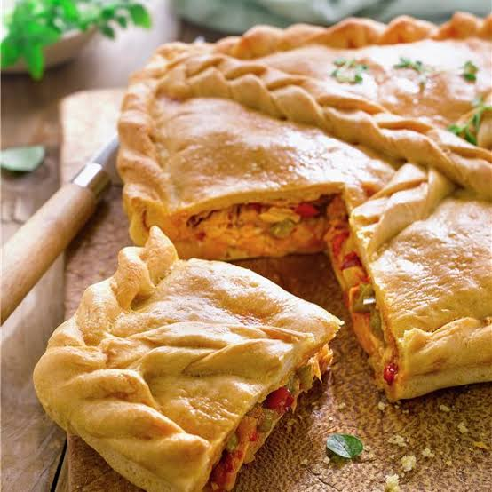
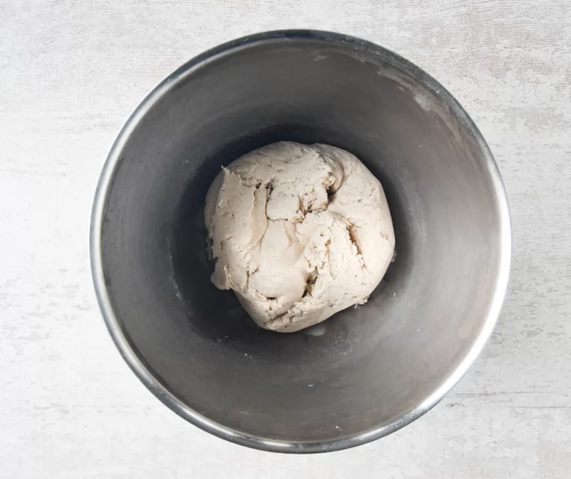
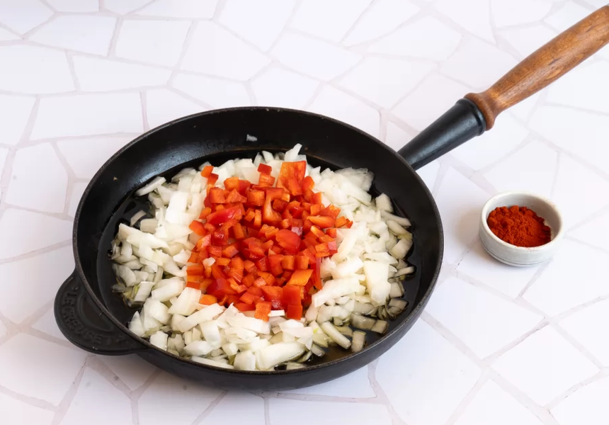
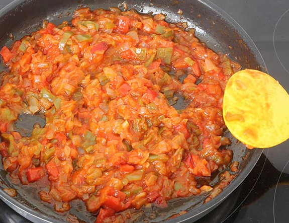
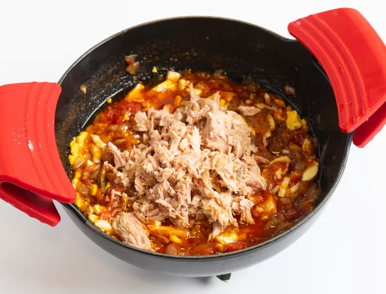
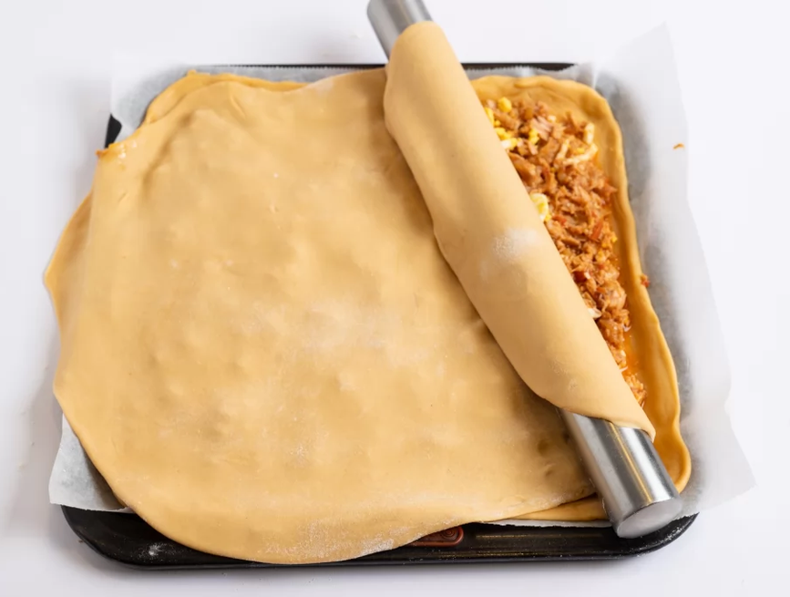
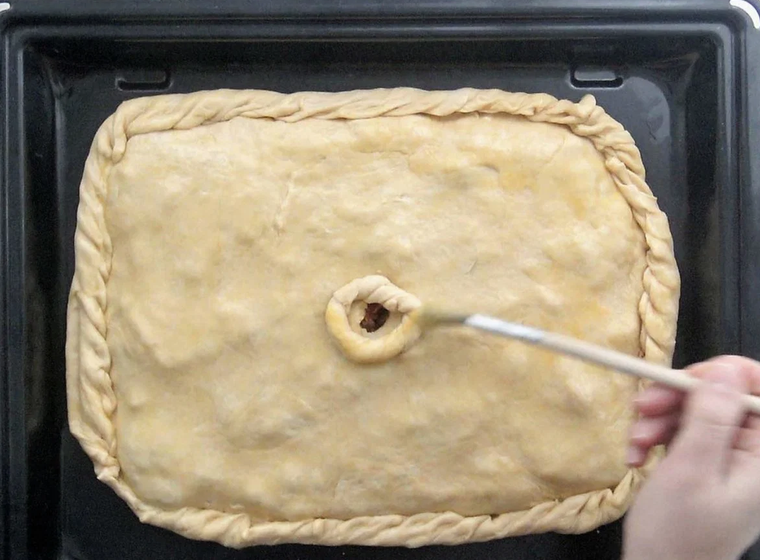
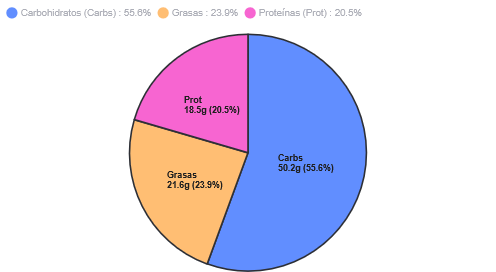

Según la RAE, una empanada es una comida consistente en una masa rellena de diversos ingredientes, como carne, pescado u hortalizas, y cocida al horno.
En esta ocasión, compartimos la receta de una empanada de atún, inspirada en esta receta al estilo gallego e incluyendo la receta para una masa casera.
Si quieres ver más recomendaciones y sitios de interés para otras recomendaciones y datos nutricionales pincha aquí

Ingredientes
Para la masa
450g de harina de trigo
100ml de aceite de oliva
75ml de vino blanco
75ml de agua tibia
1cdta de levadura quimica
Una pizca de sal
1 huevo batido
Para el relleno
250g de cebolla
350g de pimientos rojos
2 dientes de ajo
50ml de aceite de oliva
200g de tomate triturado
300g de atun en conserva escurrido
2cdtas de pimentón dulce
Una pizca de sal
Una pizca de azúcar
Elaboración
Primero prepararemos la masa: mezcla los ingredientes secos en un bol y agrega los ingredientes húmedos mientras vas amasando hasta obtener una masa homogénea. Sepárala, tápala con un paño y déjala reposar.

Hacer el sofrito: pica la cebolla, dientes de ajo y pimiento rojo en trozos pequeños para sofreírlos en una sartén con el aceite de oliva a fuego medio hasta que estén tiernos.

Añade el tomate: incorpora el tomate triturado a la mezcla junto al pimentón dulce, sal y azúcar. Cocina a fuego medio durante unos 10 minutos o hasta que la mezcla espese.

Completa el relleno: retira del fuego y añade el atún desmigado. Mezcla bien y separa para que enfríe.

Armar la empanada: precalienta el horno a 200°C. Divide la masa en 2 partes iguales y estíralas con un rodillo. Coloca una base sobre una bandeja de horno con papel vegetal, distribuye el relleno de atún por encima y tapa con la otra lámina de masa.

Sellar y hornear: sella bien los bordes haciendo un repliegue, pincha la superficie con un tenedor, haz un agujero central para que el vapor pueda ser expulsado y pinta la superficie con huevo batido. Hornea durante 45 minutos hasta que esté dorada.

Tabla nutricional
Valores nutricionales
Nutriente
Toda la empanada
Por ración (1/8)
Calorías
3.833 kcal
479 kcal
Carbohidratos
402 g
50,2 g
de los cuales azúcares
23,5 g
2,9 g
Proteínas
148 g
15,5 g
Grasas totales
173 g
21,6 g
de las cuales saturadas
24,5 g
3,1 g
Sal
~4,5 g
~0,6 g

Otras recomendaciones y enlaces de interés
Si buscas inspiración para tus próximos platos tradicionales (siguiendo los principios de la Dieta Atlántica), estos portales y blogs de referencia combinan tradición y sabor:
La cocina de Fabrisa: blog gallego donde su autora, Isabel, detalla recetas tradicionales de Galicia
Fundación Dieta Atlántica: portal oficial de la Universidad de Santiago de Compostela dedicado a promover la gastronomía del norte de España
Si necesitas calcular las calorías, macronutrientes o propiedades de los ingredientes que usas en casa, estas son las herramientas oficiales y de acceso público más fiables:
Fundación Española de la Nutrición (FEN): ofrece un diccionario nutricional bastante completo con las propiedades, vitaminas y minerales de cientos de alimentos frescos y procesados del mercado español.